Полноцветные копиры-принтеры умеют многое - от фотографического копирования оригиналов и печати из-под любых графических приложений до сканирования и пересылки образов по компьютерной сети
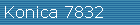
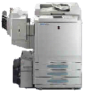
Полноцветный копир-принтер для профессионалов: арт-студий, рекламных бюро и т.д., для всех тех, кому нужна фотографическая точность воспроизведения изображения на копии. Его функции позволяют максимально использовать преимущества цифровой технологии и производить с изображением почти любые действия. Он будет полезен при ретушировании фотографий, печати визитных карточек, цветных рекламных буклетов, плакатов и цветопроб. Может работать на плотной бумаге.Эта машина подключается к компьютерной сети, совмещая в себе сетевой принтер и сетевой полноцветный сканер с разрешением 600 dpi. Представляет собой дальнейшее развитие широко известных копиров Minolta CF910 и CF900, с более современной электроникой, большим объемом памяти и новыми принт-контроллерами, встроенным и внешним
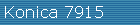
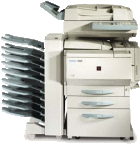
Офисный копир-принтер. Принципиально новая разработка, скорость изготовления цветных и черно-белых копий в этой машине одинаковая, при этом для изготовления черно-белых копий цветные картриджи не используются, что снижает себестоимость копий. Благодаря прямому тракту прохождения бумаги может захватывать плотную бумагу из обычных кассет. Эта машина подключается к компьютерной сети, совмещая в себе сетевой принтер и сетевой полноцветный сканер с разрешением 600 точек/дюйм
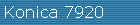
Офисный копир-принтер. Принципиально новая разработка, скорость изготовления цветных и черно-белых копий в этой машине одинаковая, при этом для изготовления черно-белых копий цветные картриджи не используются, что снижает себестоимость копий. Благодаря прямому тракту прохождения бумаги может захватывать плотную бумагу из обычных кассет. Эта машина подключается к компьютерной сети, совмещая в себе сетевой принтер и сетевой полноцветный сканер с разрешением 600 точек/дюйм. Отличается от 7915 только скоростью (20 копий в минуту) и возможностью подключения, кроме внутреннего (как для 7915 ), более мощного внешнего принт-контроллера
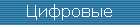
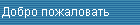
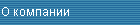
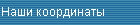
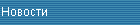
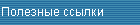
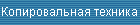
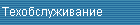
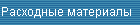
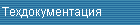
Copyright © 2001
ООО "Формат-Сервис" г.Владивосток, ул. Уборевича 19, оф.103 тел/факс: +7-4232-26-79-41
e-mail: contact@format-service.ru